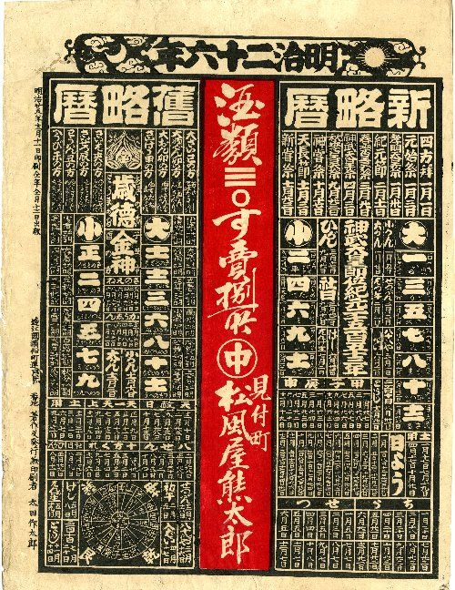
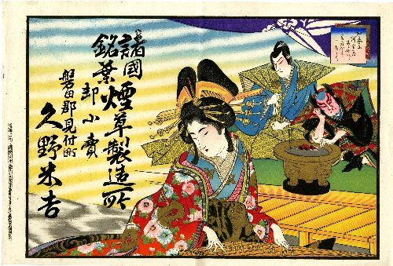
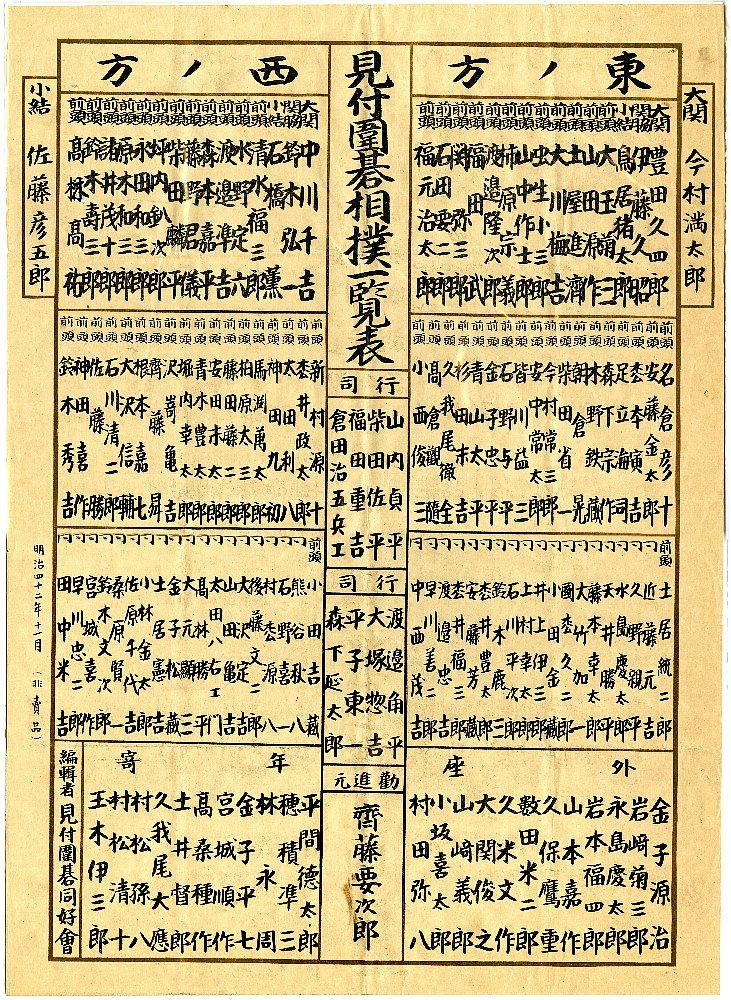
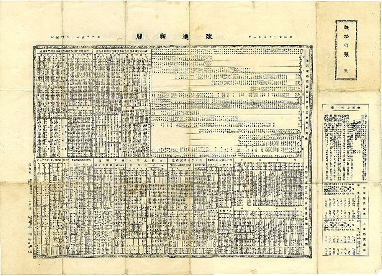
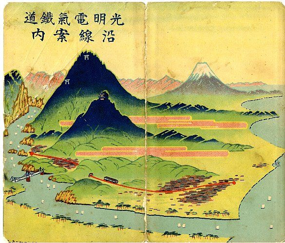
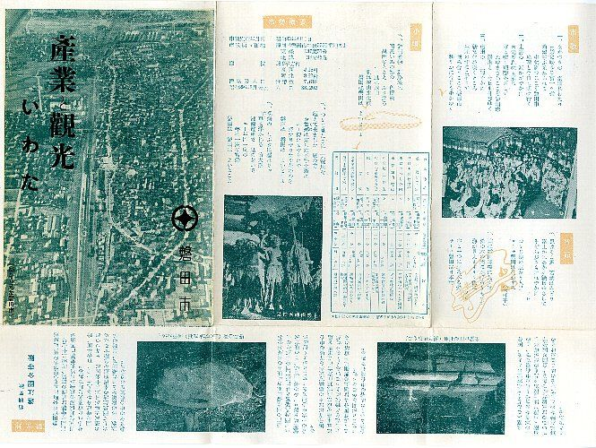
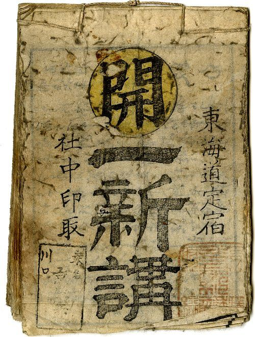

史料アーカイブ ｜ 佐口行正氏所蔵史料
佐口行正氏所蔵史料 ──
紙片が伝える、見付のまちの記憶

佐口行正氏について ── 磐田・見付の郷土史研究家
佐口行正氏は、静岡県磐田市見付を中心に、地域の歴史・文化・暮らしの記憶を長年にわたり収集・研究されてきた郷土史研究家です。
見付のまちに残る古写真、絵はがき、引き札、浮世絵、商店街にまつわる資料など、地域の人々の営みを伝える貴重な資料を数多く所蔵されており、そのコレクションは磐田市内の企画展や文化財関連の展示でも紹介されています。磐田市歴史文書館の企画展では「佐口行正氏所蔵」の資料が展示され、また見付の文化イベントでも、佐口氏所蔵の引き札や昭和の見付の写真などが紹介されています。
佐口氏の活動は、単に古い資料を集めることにとどまりません。そこには、見付というまちがどのように栄え、人々がどのように暮らし、商い、祭り、学び、時代を重ねてきたのかを、次の世代へ伝えようとする深い思いがあります。
本サイトでは、佐口行正氏のご厚意により、所蔵資料の一部を掲載させていただきます。失われつつある地域の記憶を、写真や資料とともに丁寧に記録し、磐田・見付の歴史文化を後世へつなぐ一助となることを目指します。
引札 ── まちの商家が刷った広告
この史料群の中心をなすのが、百点をこえる「引札（ひきふだ）」である。引札とは、商店が客に配った広告のちらしのことで、江戸期から明治・大正にかけて広くおこなわれた。多くは年の暮れに配られ、新しい年の福を願う図柄に、店の名と扱う品が刷り込まれた。当時の色刷りの技術をつくした引札は、ただの宣伝物ではなく、もらった人が一年のあいだ家に飾る、季節の風物でもあった。

佐口氏の引札を見ていくと、川島幸三郎・久野米吉・内山栄吉・岩田屋喜一郎といった、見付・中泉の商家の名がつぎつぎとあらわれる。そして、その多くに「印刷兼発行者 古島竹次郎」「同 古島德次郎」「中遠日進社印刷」といった刷り元の名が添えられている。広告を出した商家だけでなく、それを刷った地元の印刷屋の存在まで見えてくるところに、この史料群の厚みがある。一枚の紙が、商いと、その商いを支えた職人の仕事を、同時に今に伝えている。
暦と一覧表 ── 紙が担った日々の役わり
引札のなかには、暦を刷り込んだ「引札暦」が少なくない。カレンダーが今ほど身近でなかった時代、商家が配る暦は実用品として重宝され、だからこそ一年を通じて人目に触れる、効果のある広告でもあった。実用と宣伝が一枚の紙のうえで結びついていた。


浮世絵に描かれた見付
佐口氏の史料には、東海道五十三次を題材にした浮世絵も含まれている。いずれも、二十八番目の宿場「見付」を描いたものである。歌川広重をはじめ、英泉・国貞・芳虎・豊国・芳艶といった絵師たちが、それぞれの趣向で見付の宿を画面にとどめた。広重の天竜川の渡し、英泉の旅の女、役者絵に重ねた見付――同じ宿場が、絵師の数だけ違った姿で描かれている。


これらの錦絵は、見付で刷られたものではなく、江戸の版元が東海道五十三次という人気の画題のなかで描いたものである。それでも、全国に流通した浮世絵のなかに見付の宿が確かな一枚として組み込まれていたことは、この宿場が東海道のうえで占めた位置を物語っている。佐口氏が、地元を描いたこれらの絵を集め、伝えてきたことの意味は大きい。
古地図がえがく、遠江と見付

古地図もまた、この史料群の見どころである。明治初年の「遠江国全図」、江戸末の「遠江小国」、そして昭和初めの「見付 地図」まで、時代の異なる地図がそろっている。地図を時代順に並べると、まちの広がりかたや、道と川の関係が、少しずつ移り変わっていくのがわかる。地名と地割りは、その土地が背負ってきた記憶の化石である。古地図は、今の磐田の風景の下に眠る、もうひとつのまちの姿を見せてくれる。
鉄道と観光 ── 近代の旅のすがた
大正から昭和にかけての史料には、鉄道や観光の案内が多く含まれる。光明電気鉄道や大井川鉄道の沿線案内、浜松鉄道の時刻表、可睡斎や法多山、天竜峡や浜名湖をめぐる名所案内――近代の旅が、どんな交通と、どんな目的地によって形づくられていたのかが、これらの紙片からうかがえる。今は失われた鉄道の名が、当時の沿線案内のなかに生きている。


道中案内と、まちのよろずの記録
このほかにも、宿の組合「一新講（いっしんこう）」の道中案内、御臨幸の記念資料、青年会の機関誌、商工会の冊子、そして商家の銅印など、まちの暮らしのさまざまな場面に結びついた史料が含まれている。一見ばらばらに見えるこれらの紙片や品々は、しかし、ひとつのまちに生きた人々が、何を商い、どこを旅し、何を記念したのかという、暮らしの全体像を少しずつ描き出していく。

約200点の史料を、目録で見る
引札・浮世絵・古地図・鉄道案内など、佐口行正氏所蔵史料のすべてを、種別での絞り込みと、商屋名・年代での検索つきで一覧できます。画像をクリックすると拡大表示します。
史料目録をひらく →史料・参考について
- 佐口行正氏所蔵史料（引札・浮世絵・古地図・鉄道案内・銅印ほか 約200点）
- 「佐口行正氏所蔵史料一覧」（2011年作成、商屋名・発行者・年代・寸法の記録）
本ページに掲載する画像および目録情報は、すべて佐口行正氏の所蔵であり、佐口行正氏の許可を得て掲載している。無断転載・二次利用を禁じる。引札・浮世絵の年代・絵師・版元などは、原資料および所蔵者作成の目録に基づいて記すが、解説文は磐田物語編集部による独自の記述である。原資料の判読不能箇所は「〇」で示した。事実関係に誤りがあれば、今後の調査により改めたい。出典・所蔵：佐口行正氏。